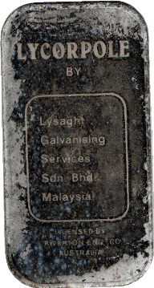
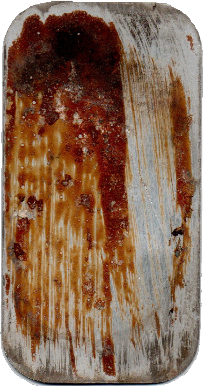
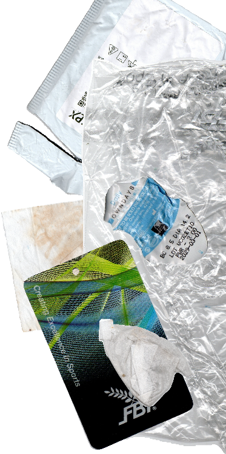
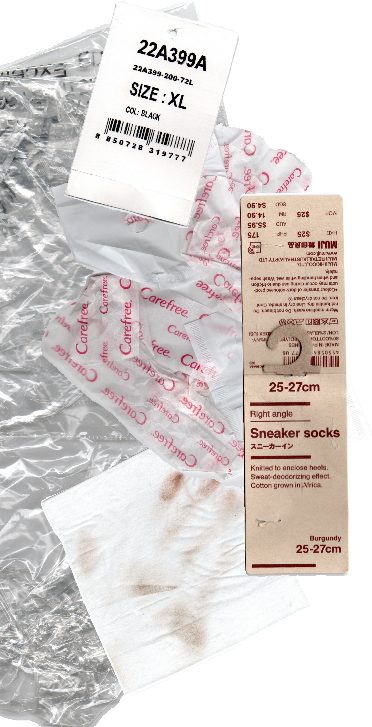

Digging Around
The Lycorpole® is a lamp post made of galvanised steel by what was once Lysaght Galvanising Services Sdn. Bhd.
Malaysia, a collaboration between Malaysian entrepreneurs, Singaporean engineers, and the eponymous Lysaght company from Australia. The Lycorpole, a dependable and steady column mast, can range anywhere between three and sixty meters, illuminating anything from streetscapes to entire football stadiums. Lysaght Galvanising Services was listed as ‘Lysaght Galvanised Steel Berhad’ on Malaysia’s stock exchange on 28 June 1994, meaning that the steel label below, found buried in the sand dunes of a beach in Thailand, must originate between that date and 4 April 1979, when the original joint venture between three countries was incorporated.

What was once an identifying label on a lamp post standing proud along the busy highways of Malaysia has now been eroded
by water, air, salt, and time, its galvanised coating seared by scratches and its edges pockmarked and bubbled by undocumented forces. At what point will it become unrecognisable? At what point will it no longer be considered an object, a thing? Give or take a few hundred years and it will be as distinguishable as any metal scrap on the beach, undignified in its anonymity.
The label itself, while thin, is not flimsy. One can bend it out of shape, surely, but it requires enough force that one comes to pause in the middle of the process

to wonder if such abuse is really worth it. Likely we would not be as hesitant as when crumpling up a piece of paper which obviously, by material composition, cannot fend for itself. Take pity not on the pathetic, but on the object that lies closer to one end of the spectrum between the weak and the strong. The Lycorpole label, unlike its eponym, knows its strength, but it knows that it is not strong enough to survive.
Trying to understand this object raises more questions pertaining to the questions rather than yielding any answers themselves. Running my fingers over its corrupted surface, I was tempted to ask things like: What was the purpose of this object? What was
it attached to? Why was it discarded? But the futility of such questions
arose when I considered the inverse of them, for how can I consider a presence without an absence, a positivist answer without speculation, mystery, subjectivity? Consider the difficulty of answering: What was this object meant not to do,
i.e. what was it meant to prevent? What attached itself to this object, and why did it let go? I also cannot ask why it was discarded without questioning if it was discarded at all, for that implies the purposeful removal of it from its original context, instead of coincidences, accidents, mistakes. Discarding suggests a loss of utility or appeal or affection, but I cannot see — in my growing attachment to this anachronistic remnant
— how it could have been anything but an object signifying sensibility, value, intent.
Is a found object mislaid or thrown out? Or is it a secret third thing?
Now observe the observer and author her life based on a select few objects from a week’s worth of garbage. Remember
that what is pictured is not all that she is; remember, again, that absence is more
portentous than presence, in the same way that we
do not look at the sky during a downpour, but before it, and after.
One imagines the exclusions from this curation. One asks why and how and so what. It is easier to imagine possibilities than it is to contend
with the bare facts of life. It is why we have analogies, poems, nightmares,
the word ‘maybe’, to-do’s and bullet points and punctuation, cinematography, etc., and etc. Listing is one way to
remedy the insatiable need for signification. Even listing an empty space signifies,

as such.
Is it easier to glean a life from one object, or from a cacophony of
ephemera, the limits of which we are physically incapable of
visualising?
As we shed objects, we seek to refine ourselves, to define our identities in a way that is more aligned with a vision (a mirage).
We strive towards an intangible ideal by
removing and adding the tangible.
There can be no other way, it seems, but to constantly tap on the materiality and signification of objects to develop some sense of our own.
And this is inescapable. We have always needed things to
guide us; they will be here long after we are gone. •
